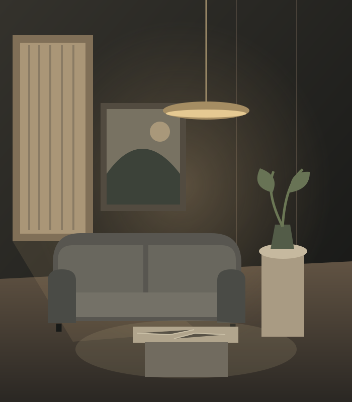
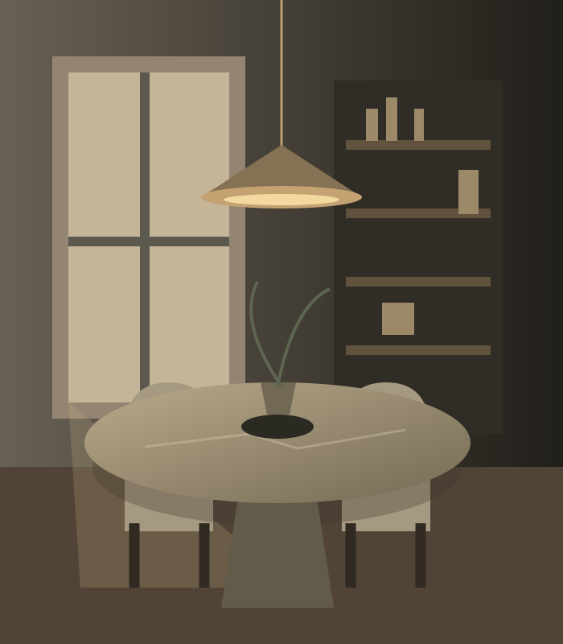

Discovery
How you live. What you love. What isn’t working. A conversation before a concept.
INTERIOR DESIGN STUDIO · LONDON & MILAN
We create residential and commercial spaces that are refined without being cold, and liveable without compromise.
SPACES THAT WHISPER. NOTHING SUPERFLUOUS.

CONCEPT STUDY / RESIDENTIAL
The Chelsea House, 2025THE LUMINE PHILOSOPHY
For people who believe the best spaces are the ones you don’t have to explain.
A restrained material palette. A generous plan. The exact place the light falls. Our concept practice starts with the way a space will be lived in, not the way it will be photographed.
Concept, spatial planning, material palettes, furniture, art and final styling — considered as one whole.
Design coordination from shell inward. Professional approvals and structural work require appointed local specialists.
Bespoke forms and enduring pieces. Explore tactile oak, stone, linen and patinated metal.
A STUDY IN RESTRAINT
No studies match this search. Try another location or select All.
Illustrated design studies, not completed client commissions.
A CONSTANT, CONSIDERED PROCESS
How you live. What you love. What isn’t working. A conversation before a concept.
Spatial ideas, material palettes and mood boards. A direction refined together.
Drawings, specifications and selections. Decisions documented before procurement.
Coordination, installation and the details that make a space feel complete.

THE STUDIO
Lumine is an imagined practice led by a simple conviction: restraint is not absence. It is the care to choose only what belongs.
Our design studies explore spaces that age beautifully — warm stone, honest timber and a little tension between old and new.
Creative direction, interior architecture, project coordination and material sourcing work together. Team biographies and office locations would be verified for a real practice.
STUDIO NOTES
Natural texture brings depth without decoration. Use a sample in changing daylight before selecting a finish; sealants and maintenance are part of the decision.
Layer task, ambient and accent light. A lower pool of illumination can make an expansive room feel intimate without losing its architecture.
Begin with how a piece will be used. Repairability, proportions and materials matter more than novelty. Leave room for what you already love.
YOUR NEXT CHAPTER
Renovation, refurbishment or new build. Even if it’s early days, start with what you know.
Local enquiry preview only. Nothing is sent and no consultation is booked.